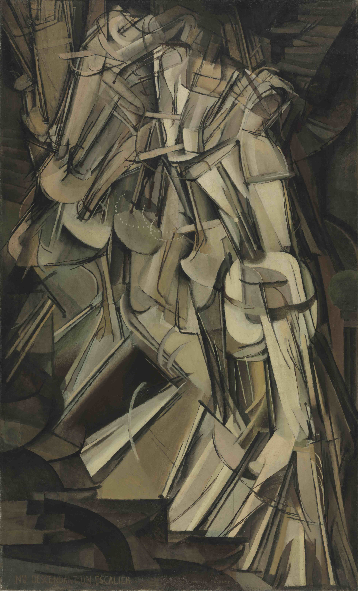

HAVING A COKE WITH YOU
is even more fun than going to San Sebastian, Irún, Hendaye, Biarritz, Bayonne
or being sick to my stomach on the Travesera de Gracia in Barcelona
partly because in your orange shirt you look like a better happier St. Sebastian
partly because of my love for you, partly because of your love for yoghurt
partly because of the fluorescent orange tulips around the birches
partly because of the secrecy our smiles take on before people and statuary
it is hard to believe when I'm with you that there can be anything as still
as solemn as unpleasantly definitive as statuary when right in front of it
in the warm New York 4 o'clock light we are drifting back and forth
between each other like a tree breathing through its spectacles
and the portrait show seems to have no faces in it at all, just paint
you suddenly wonder why in the world anyone ever did them
I look
at you and I would rather look at you than all the portraits in the world
except possibly for the Polish Rider occasionally and anyway it's in the Frick
which thank heavens you haven't gone to yet so we can go together the first time
and the fact that you move so beautifully more or less takes care of Futurism
just as at home I never think of the Nude Descending a Staircase or
at a rehearsal a single drawing of Leonardo or Michelangelo that used to wow me
and what good does all the research of the Impressionists do them
when they never got the right person to stand near the tree when the sun sank
or for that matter Marino Marini when he didn't pick the rider as carefully
as the horse
it seems they were all cheated of some marvelous experience
which is not going to go wasted on me which is why I'm telling you about it
A poem by Frank O'Hara
Image Credits

